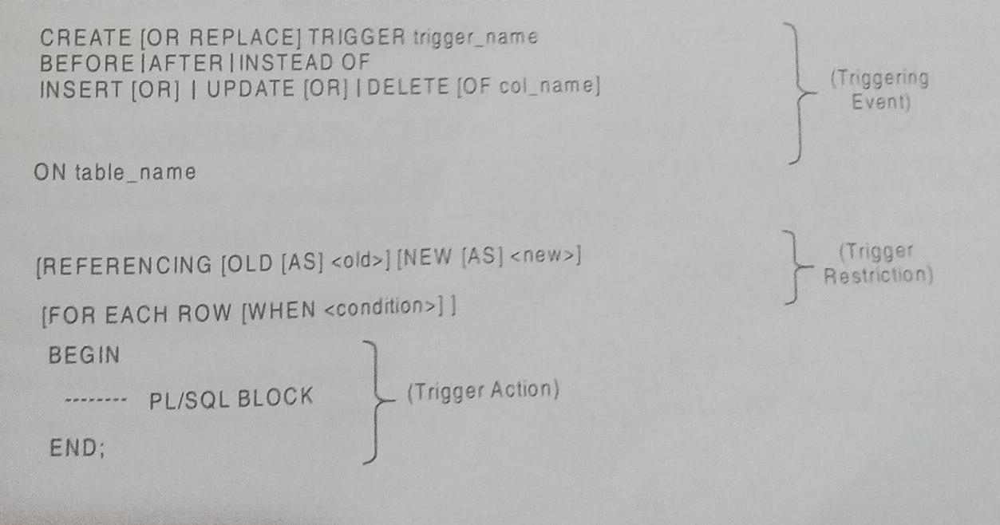

Creating a Trigger
CREATE TRIGGER statement is used to create a database trigger.
SYNTAX

In the syntax:
1.CREATE [OR REPLACE] TRIGGER trigger_name-This clause creates a trigger with the given name or overwrites an existing trigger with the same name.
2.BEFORE | AFTER | INSTEAD OF- This clause indicates at what time should the Irigger get fired. For example. Before or After updating a table INSTEAD OF is used to create a trigger on a view. BEFORE and AFTER cannot be used to create a trigger On a VIEW
3.INSERT (OR) |UPDATE [OR]| DELETE- This clause determines the triggering event More than one triggering events can be used together separated by OR keyword. The trigger gets fired at all the specified triggering event.
4.[OF col name] - This clause is used with update triggers. This clause is used when you want to trigger an event only when a specific column is updated.
5.ON table name- This clause identifies the name of the table or view to which the trigger is associated.
6.[REFERENCING (OLD (AS) <old>] [NEW [AS] <new>!! This clause is used t reference the old and new values of the data being changed. By default, you reference the values as cold.column name or new.column_name The referencr names can also be changed from old for new) to any other user-defined name. You cannot reference old values when inserting a record or new values when deleting a record, because they do not exist. 7.[FOR EACH ROW]- This clause is used to determine whether a trigger must fire when each row gets affected de A Row-Level Triggeri or just once when the entire SQL statement is executed . 8.[WHEN <condition>/- This clause is valid only for Row-level triggers. The trigger s fired only for rows that satisfy the condition specified.
EXAMPLE
The price of a product changes constantly. It is important to maintain the history of the prices of the products.
We can create a trigger to update the PRODUCT PRICE HISTORY table when the price of the product is updated in the PRODUCT table .
STEP 1:CREATE THE 'PRODUCT TABLE ' AND 'PRODUCT_PRICE_HISTORY' TABLE.
We can create a trigger to update the PRODUCT PRICE HISTORY table when the price of the product is updated in the PRODUCT table .
STEP 1:CREATE THE 'PRODUCT TABLE ' AND 'PRODUCT_PRICE_HISTORY' TABLE.
CREATE TABLE PRODUCT (
product_id number(5),
product_name varchar(32),
supplier_name varchar(32),
unit_price number);
CREATE TABLE PRODUCT_PRICE_HISTORY(
product_id number (5),
product_name varchar(32),
supplier_name varchar(32),
unit_price number
);
STEP 2:INSERT VALUES INTO 'PRODUCT' TABLE:
INSERT INTO PRODUCT VALUES(1001,'BOOK','NEW WAY',500);
STEP 3:CREATE THE HISTORY_TRIGGER AND EXECUTE IT:
CREATE OF REPLACE TRIGGER HISTORY_TRIGGER BEFORE UPDATE OF unit_price ON PRODUCT FOR EACH ROW BEGIN INSERT INTO PRODUCT_PRICE_HISTORY VALUES (:old.product_id, :old.product_name, :old.supplier_name, :old.unit_price); END;STEP4: LET'S UPDATE THE PRICE OF A PRODUCT:
UPDATE PRODUCT SET unit_price =800 WHERE product_id = 100;Once the above update query is executed, the trigger fires and updates the PRODUCT PRICE HISTORY table